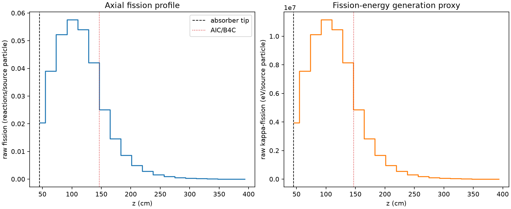
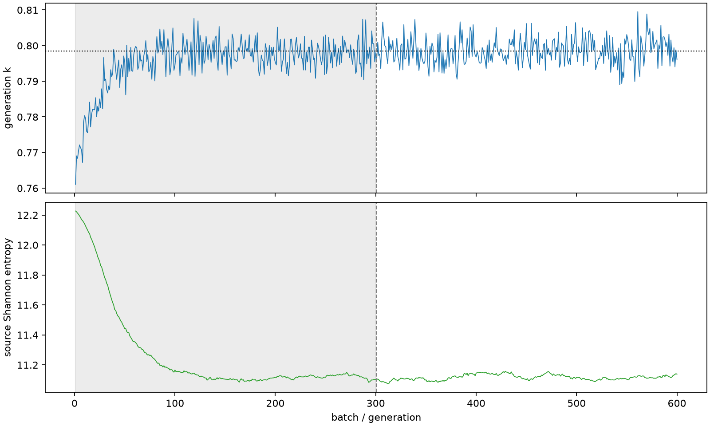

| field | value |
|---|---|
| experiment | V2-STAGE_256_OGRENCI_02-0011 |
| k | 0.7985289733168816 |
| MC standard error | 0.00016020983445678326 |
| seconds | 902.9966641630017 |
| acceptance | not_assessed |
| convergence | review_required |
Completed is output integrity only; physical and statistical review required. Zero tallies do not prove zero production or zero uncertainty.
| diagnostic | value |
|---|---|
| geometric fuel voxels | 5280 |
| zero fission tally voxels | 0 |
| low signal fuel voxels | 736 |
| low signal fission share | 0.0002193743512006938 |
| low signal kappa share | 0.00021939061377675503 |
| important fission share | 0.9500635492958674 |
| previous filter included | 4544 |
| duration estimate s | 1562.5173488400023 |
| actual minus estimate s | -659.5206846770006 |
| fission relative MC error | statistics |
|---|---|
| all_geometric_fuel | {"voxels": 5280, "positive_mean_voxels": 5280, "zero_mean_voxels": 0, "undefined_relative_error_voxels": 0, "median": 0.02637133501816879, "p95": 0.36027939815367777, "maximum": 0.8378838074331699} |
| low_signal | {"voxels": 736, "positive_mean_voxels": 736, "zero_mean_voxels": 0, "undefined_relative_error_voxels": 0, "median": 0.31711449009745063, "p95": 0.5669785991981799, "maximum": 0.8378838074331699} |
| important_95pct | {"voxels": 2211, "positive_mean_voxels": 2211, "zero_mean_voxels": 0, "undefined_relative_error_voxels": 0, "median": 0.008245833289651335, "p95": 0.01473120392309875, "maximum": 0.01975183743192871} |
| outside_previous_filter | {"voxels": 736, "positive_mean_voxels": 736, "zero_mean_voxels": 0, "undefined_relative_error_voxels": 0, "median": 0.31711449009745063, "p95": 0.5669785991981799, "maximum": 0.8378838074331699} |
| kappa_fission relative MC error | statistics |
|---|---|
| all_geometric_fuel | {"voxels": 5280, "positive_mean_voxels": 5280, "zero_mean_voxels": 0, "undefined_relative_error_voxels": 0, "median": 0.026325644382202626, "p95": 0.35890473448666677, "maximum": 0.8365243950409451} |
| low_signal | {"voxels": 736, "positive_mean_voxels": 736, "zero_mean_voxels": 0, "undefined_relative_error_voxels": 0, "median": 0.3166986781241178, "p95": 0.5664803018377977, "maximum": 0.8365243950409451} |
| important_95pct | {"voxels": 2211, "positive_mean_voxels": 2211, "zero_mean_voxels": 0, "undefined_relative_error_voxels": 0, "median": 0.008232294641101593, "p95": 0.014702165801998481, "maximum": 0.019721117734326353} |
| outside_previous_filter | {"voxels": 736, "positive_mean_voxels": 736, "zero_mean_voxels": 0, "undefined_relative_error_voxels": 0, "median": 0.3166986781241178, "p95": 0.5664803018377977, "maximum": 0.8365243950409451} |
| axial bin | fission share | kappa-fission share |
|---|---|---|
| 1 | 0.06276029627883742 | 0.06275725508612431 |
| 2 | 0.12004189873210813 | 0.12003963481640609 |
| 3 | 0.1607910067287841 | 0.1607878644633253 |
| 4 | 0.17708888336458273 | 0.1770861768027412 |
| 5 | 0.16631903559709588 | 0.1663160123452129 |
| 6 | 0.12953348056757524 | 0.1295321837798829 |
| 7 | 0.07727633823090356 | 0.07728207306825571 |
| 8 | 0.04474345803269187 | 0.04474760032549489 |
| 9 | 0.02631038818135581 | 0.026312614877922955 |
| 10 | 0.015195472575483912 | 0.015197016152153657 |
| 11 | 0.008639123481228394 | 0.008640003468745296 |
| 12 | 0.004920598602011261 | 0.004921065344762921 |
| 13 | 0.0028196059454384755 | 0.0028197993578977757 |
| 14 | 0.0015901151974437365 | 0.0015902259741043664 |
| 15 | 0.000902859645301267 | 0.0009029037187403191 |
| 16 | 0.000510364839164667 | 0.0005104461589781228 |
| 17 | 0.0003106491291197041 | 0.00031067922723619445 |
| 18 | 0.00015165665941426363 | 0.0001516665881647424 |
| 19 | 6.76001052437666e-05 | 6.760730869246714e-05 |
| 20 | 2.7168106215703474e-05 | 2.7171135157718687e-05 |
Histories include the inactive-to-active transition at batch 300. kappa-fission approximates fission energy production, not total heat deposition.

